12
ഒറ്റനോോട്ടത്തിൽ

12
ഒറ്റനോോട്ടത്തിൽ


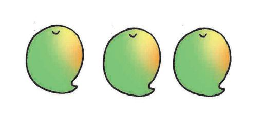
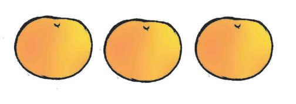
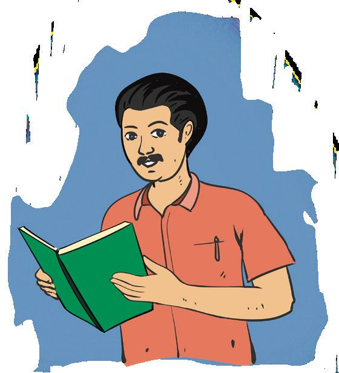
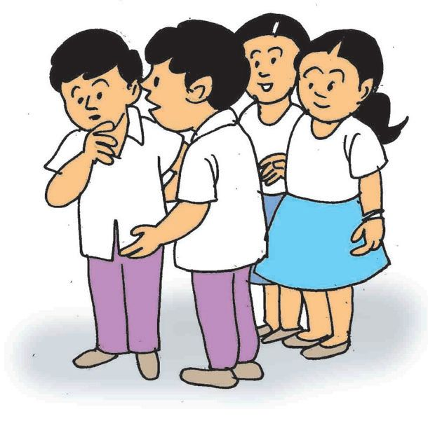

ഗണിതം സ്റ്റാൻഡേർഡ് - III
ഫ്രൂട്ട് സാലഡ് ഫ്രൂട്ട് സാലഡ് ഉണ്ടാക്കുന്നതിനായി മിലന്റെ ക്ലാസിലെ കുട്ടികൾ പഴങ്ങൾ കൊൊണ്ടുവന്നു. എല്ലാത്തരം പഴങ്ങളുമുണ്ടടോ ? ഓരോോ തരം പഴങ്ങളും എത്ര വീതമുണ്ട് ?
ഹൊൊ! ഇങ്ങനെ വച്ചാൽ എങ്ങനെ എണ്ണും ?
തരം തിരിച്ച് വച്ചാലോോ ?
പഴങ്ങൾ തരംതിരിച്ചത് നോോക്കൂ.
174

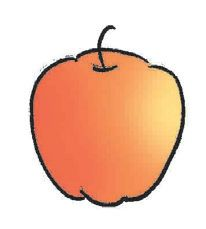


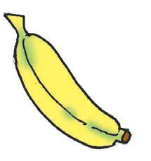

ഒറ്റനോോട്ടത്തിൽ
പഴം
എണ്ണം •
ഏത് തരം പഴമാണ് കൂടുതലുള്ളത് ? ഓറഞ്ച് ഇല്ലല്ലലോ ?
•
ഒരെണ്ണം മാത്രമുള്ള പഴം ഏതാണ് ?
•
ഒരേ എണ്ണമുള്ള പഴങ്ങൾ ഏതെല്ലാം ?
•
പൈനാപ്പിളിനേക്കാൾ എത്ര എണ്ണം കൂടുതലാണ് പേരയ്ക്ക ?
•
മാങ്ങയേക്കാൾ കൂടുതലുള്ള പഴങ്ങൾ ഏതെല്ലാം ?
175
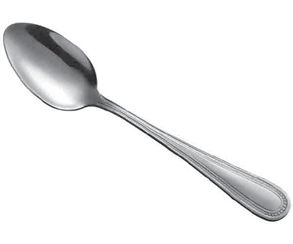
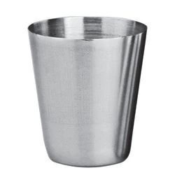
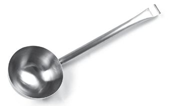
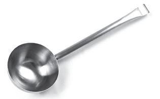
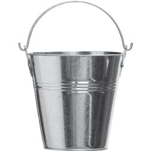
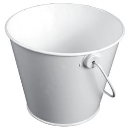
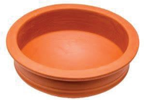


ഗണിതം സ്റ്റാൻഡേർഡ് - III
സ്കൂളിലെ അടുക്കളയിൽ നിന്ന് പാത്രങ്ങളെടുത്ത് അവർ ഫ്രൂട്ട് സാലഡ് ഉണ്ടാക്കി എല്ലാവർക്കും കൊൊടുത്തു. നിങ്ങളും ഫ്രൂട്ട് സാലഡ് ഉണ്ടാക്കൂ... അടുക്കളയിൽ നിന്ന് ഏതെല്ലാം പാത്രങ്ങൾ എടുത്തു ? പട്ടികയിൽ എഴുതൂ.
ഇനം
എണ്ണം
ഇനം
എണ്ണം
എന്റെ വീട്ടിൽ എന്റെ വീട്ടിലെ പാത്രങ്ങളുടെ എണ്ണം.
ഇനം
എണ്ണം
ഇനം
എണ്ണം 176


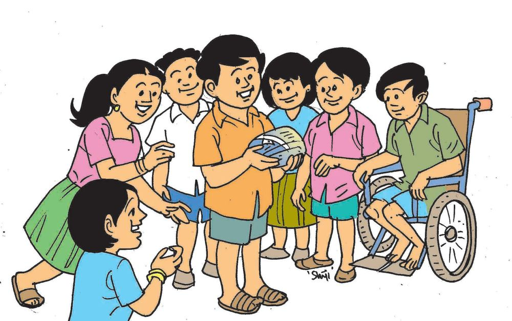
ഒറ്റനോോട്ടത്തിൽ
പലഹാരങ്ങൾ മിലൻ പാത്രങ്ങളുടെ എണ്ണം നോോക്കാൻ അടുക്കളയിൽ പോോയി. അമ്മ അവന്റെ ഇഷ്ടപലഹാരമായ ഉണ്ണിയപ്പം ഉണ്ടാക്കുകയാണ്.
എന്റെ പിറന്നാളല്ലേ... എല്ലാ കൂട്ടുകാർക്കും ഉണ്ണിയപ്പം കൊൊടുക്കണം.
മിലൻ ഉണ്ണിയപ്പവുമായി ക്ലാസിലെത്തി.
177
എനിക്ക് ഇലയടയാണിഷ്ടം.

ഗണിതം സ്റ്റാൻഡേർഡ് - III
നിങ്ങളുടെ ക്ലാസ്സിലെ മുഴുവൻ കൂട്ടുകാരുടെയും ഇഷ്ടപലഹാരം ചോോദിച്ചറിയൂ... ഓരോോ പലഹാരവും ഇഷ്ടപ്പെടുന്നവരുടെ എണ്ണം ചിത്രരൂപത്തിൽ പട്ടികപ്പെടുത്തുക. പലഹാരം
എണ്ണം
• ഇലയട • നെയ്യപ്പം • ഉഴുന്നുവട • ബോോണ്ട • ഉണ്ണിയപ്പം • പരിപ്പുവട • ഉള്ളിവട • • ഏറ്റവും കൂടുതൽ പേർ ഇഷ്ടപ്പെട്ട പലഹാരം ഏതാണ് ? എത്ര പേർ ? ഉഴുന്നുവട ഇഷ്ടപ്പെടുന്നവർ എത്ര പേരാണ് ? ആർക്കും ഇഷ്ടമില്ലാത്ത പലഹാരം ഏതാണ് ? ഇങ്ങനെ ചില ചോോദ്യങ്ങൾ എഴുതൂ... കൂട്ടുകാരോോട് ചോോദിക്കൂ... • • • • 178

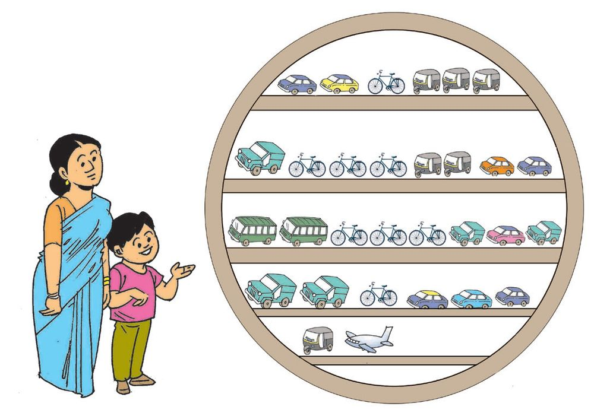
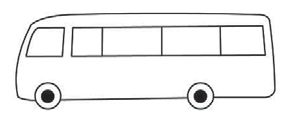
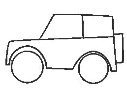
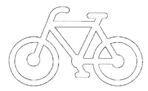

ഒറ്റനോോട്ടത്തിൽ
കളിവാഹനങ്ങൾ മിലന് പിറന്നാൾ സമ്മാനമായി കളിപ്പാട്ടം വാങ്ങാൻ അവർ കടയിലെത്തി. കളിവാഹ നങ്ങൾ നിരത്തിവച്ചിരി ക്കുന്നത് കണ്ടു. ചിത്രം നോോക്കൂ...... ഓരോോ വാഹനത്തിന്റെയും എണ്ണം വരച്ചു ചേർക്കൂ.... എണ്ണം എഴുതൂ. ചിത്രം
179
എണ്ണം

ഗണിതം സ്റ്റാൻഡേർഡ് - III
ഏതുവാഹനമാണ് എറ്റവും കുറവ് ? ഒരേ എണ്ണമുള്ള വാഹനങ്ങൾ ഏതൊൊക്കെയാണ് ? എന്റെ ചോോദ്യങ്ങൾ • • • • •
എന്തെല്ലാം കാണാം ? നിങ്ങളുടെ സ്കൂൾ കെട്ടിടം നോോക്കൂ... ജനൽ, വാതിൽ, ബോോർഡ്, സ്വിച്ച് ബോോർഡ്, ഫാൻ, ലൈറ്റ് എന്നിങ്ങനെ എന്തെല്ലാം കാണാം? അത് പട്ടികയിലാക്കൂ. ഇനം
എണ്ണം ചിത്രത്തിലൂടെ
ജനൽ വാതിൽ ബോോർഡ് സ്വിച്ചച്ബബോർഡ് ഫാൻ ലൈറ്റ് എന്റെ ചോോദ്യങ്ങൾ • • 180
എണ്ണം

ഒറ്റനോോട്ടത്തിൽ
ചിത്രവായന
പേജ് 173 ലെ ചിത്രം നോോക്കൂ... ചിത്രത്തിൽ എന്തെല്ലാം ജീവികൾ ? പട്ടികയിൽ എഴുതൂ. പേര്
എണ്ണം
കുരങ്ങ്
എന്റെ ചോോദ്യങ്ങൾ • • • •
181


ഗണിതം സ്റ്റാൻഡേർഡ് - III
വിലയിരുത്തൽ പ്രവർത്തനങ്ങൾ എത്ര കുട്ടികൾ ? മിലന്റെ സ്കൂളിലെ കുട്ടികളുടെ വിവരമാണ് ചുവടെ: ക്ലാസ്
ആൺകുട്ടികളുടെ എണ്ണം
പെൺകുട്ടികളുടെ എണ്ണം
I
15
19
II
20
20
III
19
22
IV
20
17
• ഏറ്റവും കൂടുതൽ പെൺകുട്ടികൾ ഏത് ക്ലാസിലാണ് ? • ഏറ്റവും കൂടുതൽ കുട്ടികൾ ഉള്ളത് ഏത് ക്ലാസിലാണ് ? നാലാം ക്ലാസിലെ ആൺകുട്ടികളുടെ എണ്ണത്തേക്കാൾ എത്ര കുറവാണ് ഒന്നാം ക്ലാസിലെ ആൺകുട്ടികളുടെ എണ്ണം ? ഒരേ എണ്ണം ആൺകുട്ടികൾ ഉള്ളത് ഏതൊൊക്കെ ക്ലാസുകളിലാണ് ? മിലന്റെ സ്കൂളിലെ ആൺകുട്ടികളുടെ എണ്ണം ? പെൺകുട്ടികളുടെ എണ്ണം ? ആകെ കുട്ടികളുടെ എണ്ണം ?
182

ഭാരതത്തിന്റെ ഭരണഘടന ഭാഗം IV ക
മൗലിക കർത്തവ്യങ്ങൾ 51 ക. മൗലിക കർത്തവ്യങ്ങൾ - താഴെപ്പറയുന്നവ ഭാരതത്തിലെ ഓരോോ പൗരന്റെയും കർത്തവ്യയം ആയിരിക്കുന്നതാണ് : (ക)
ഭരണഘടനയെ അനുസരിക്കുകയും അതിന്റെ ആദർശങ്ങളെയും സ്ഥാപനങ്ങ ളെയും ദേശീയപതാകയെയും ദേശീയഗാനത്തെയും ആദരിക്കുകയും ചെയ്യുക;
(ഖ) സ്വാതന്ത്ര്യത്തിനുവേണ്ടിയുള്ള നമ്മുടെ ദേശീയസമരത്തിന് പ്രചോോദനം നൽകിയ മഹനീയാദർശങ്ങളെ പരിപോോഷിപ്പിക്കുകയും പിൻതുടരുകയും ചെയ്യുക; (ഗ)
ഭാരതത്തിന്റെ പരമാധികാരവും ഐക്യവും അഖണ്ഡതയും നിലനിർത്തുകയും സംരക്ഷിക്കുകയും ചെയ്യുക;
(ഘ) രാജ്യത്തെ കാത്തുസൂക്ഷിക്കുകയും ദേശീയസേവനം അനുഷ്ഠിക്കുവാൻ ആവശ്യ പ്പെടുമ്പപോൾ അനുഷ്ഠിക്കുകയും ചെയ്യുക; (ങ) മതപരവും ഭാഷാപരവും പ്രാദേശികവും വിഭാഗീയവുമായ വൈവിധ്യങ്ങൾക്കതീ തമായി ഭാരതത്തിലെ എല്ലാ ജനങ്ങൾക്കുമിടയിൽ, സൗഹാർദവും പൊൊതുവായ സാഹോോദര്യമനോോഭാവവും പുലർത്തുക, സ്ത്രീകളുടെ അന്തസ്സിന് കുറവു വരുത്തുന്ന ആചാരങ്ങൾ പരിത്യജിക്കുക; (ച)
നമ്മുടെ സമ്മിശ്രസംസ്കാരത്തിന്റെ സമ്പന്നമായ പാരമ്പര്യത്തെ വിലമതിക്കുകയും നിലനിറുത്തുകയും ചെയ്യുക;
(ഛ) വനങ്ങളും തടാകങ്ങളും നദികളും വന്യജീവികളും ഉൾപ്പെടുന്ന പ്രകൃത്യയാ ഉള്ള പരിസ്ഥിതി സംരക്ഷിക്കുകയും അഭിവൃദ്ധിപ്പെടുത്തുകയും, ജീവികളോോട് കാരുണ്യയം കാണിക്കുകയും ചെയ്യുക; (ജ)
ശാസ്ത്രീയമായ കാഴ്ചപ്പാടും മാനവികതയും, അന്വവേഷണത്തിനും പരിഷ്കരണ ത്തിനും ഉള്ള മനോോഭാവവും വികസിപ്പിക്കുക;
(ഝ) പൊൊതുസ്വത്ത് പരിരക്ഷിക്കുകയും ശപഥം ചെയ്ത് അക്രമം ഉപേക്ഷിക്കുകയും ചെയ്യുക; (ഞ) രാഷ്ട്രം യത്നത്തിന്റെയും ലക്ഷഷ്യപ്രാപ്തിയുടെയും ഉന്നതതലങ്ങളിലേക്ക് നിരന്തരം ഉയരത്തക്കവണ്ണം വ്യക്തിപരവും കൂട്ടായതുമായ പ്രവർത്തനത്തിന്റെ എല്ലാ മണ്ഡലങ്ങളിലും ഉൽക്കൃഷ്ടതയ്ക്കുവേണ്ടി അധ്വാനിക്കുക; (ട)
ആറിനും പതിനാലിനും ഇടയ്ക്ക് പ്രായമുള്ള തന്റെ കുട്ടിക്കകോ തന്റെ സംരക്ഷണ യിലുള്ള കുട്ടികൾക്കകോ, അതതു സംഗതി പോോലെ, മാതാപിതാക്കളോോ രക്ഷാകർ ത്താവോോ വിദ്യയാഭ്യയാസത്തിനുള്ള അവസരങ്ങൾ ഏർപ്പെടുത്തുക.
കുട്ടികളുടെ അവകാശങ്ങൾ പ്രിയമുള്ള കുട്ടികളേ, നിങ്ങൾക്കുള്ള അവകാശങ്ങളെന്തെല്ലാമെന്ന് അറിയേണ്ടതില്ലേ? അവകാശങ്ങളെക്കു റിച്ചുള്ള അറിവ് നിങ്ങളുടെ പങ്കാളിത്തം, സംരക്ഷണം, സാമൂഹികനീതി എന്നിവ ഉറപ്പാക്കാൻ പ്രേരണയും പ്രചോോദനവും നൽകും. നിങ്ങളുടെ അവകാശങ്ങൾ സംരക്ഷിക്കാൻ ഇപ്പപോൾ ഒരു കമ്മീഷൻ പ്രവർത്തിക്കുന്നുണ്ട്. കേരള സംസ്ഥാന ബാലാവകാശസംരക്ഷണ കമ്മീഷൻ എന്നാണ് അതിന്റെ പേര്. എന്തെല്ലാമാണ് നിങ്ങൾക്കുള്ള അവകാശങ്ങൾ എന്നു നോോക്കാം.
സംസാരത്തിനും ആശയപ്രകടനത്തിനു മുള്ള സ്വാതന്തത്ര്യം
ജീവന്റെയും വ്യക്തിസ്വാതന്ത്ര്യത്തിന്റെ യും സംരക്ഷണം
അതിജീവനത്തിനും പൂർണ്ണവികാസത്തി നുമുള്ള അവകാശം
ജാതി-മത-വർഗ-വർണ്ണ ചിന്തകൾക്കതീത മായി ബഹുമാനിക്കപ്പെടാനും അംഗീകരി ക്കപ്പെടാനുമുള്ള അവകാശം
മാനസികവും ശാരീരികവും ലൈംഗി കവുമായ പീഡനങ്ങളിൽ നിന്നുള്ള സംര ക്ഷണത്തിനും പരിചരണത്തിനുമുള്ള അവകാശം
പങ്കാളിത്തത്തിനുള്ള അവകാശം
ബാലവേലയിൽനിന്നും ആപൽക്കര മായ ജോോലികളിൽനിന്നുമുള്ള മോോചനം
ശൈശവവിവാഹത്തിൽനിന്നുള്ള
ക്ഷണം
സ്വന്തം
സംര
സംസ്കാരം അറിയുന്നതിനും അതനുസരിച്ച് ജീവിക്കുന്നതിനുമുള്ള സ്വാതന്തത്ര്യം
അവഗണനകളിൽനിന്നുള്ള സംരക്ഷണം
സൗജന്യവും നിർബന്ധിതവുമായ വിദ്യയാ ഭ്യയാസ അവകാശം
കളിക്കാനും പഠിക്കാനുമുള്ള അവകാശം
സ്നേഹവും
സുരക്ഷയും നൽകുന്ന കുടുംബവും സമൂഹവും ലഭ്യമാകാനുള്ള അവകാശം
നിങ്ങളുടെ ചില ഉത്തരവാദിത്വങ്ങൾ സ്കൂൾ, പൊൊതുസംവിധാനങ്ങൾ എന്നിവ നശിപ്പിക്കാതെ സംരക്ഷിക്കുക. സ്കൂളിലും പഠനപ്രവർത്തനങ്ങളിലും കൃത്യ നിഷ്ഠ പാലിക്കുക. സ്കൂൾ അധികാരികളെയും അധ്യയാപ കരെയും മാതാപിതാക്കളെയും സഹപാഠി കളെയും ബഹുമാനിക്കുകയും അംഗീകരി ക്കുകയും ചെയ്യുക. ജാതി-മത-വർഗ-വർണ്ണ ചിന്തകൾക്കതീ തമായി മറ്റുള്ളവരെ ബഹുമാനിക്കാനും അംഗീകരിക്കാനും സന്നദ്ധരാവുക.
ബന്ധപ്പെടേണ്ട വിലാസം:
കേരള സംസ്ഥാന ബാലാവകാശസംരക്ഷണ കമ്മീഷൻ
ശ്രീ ഗണേഷ്, റ്റി.സി. 14/2036, വാൻറോോസ് ജംങ്ഷൻ, കേരള യൂണിവേഴ്സിറ്റി പി.ഒ, തിരുവനന്തപുരം – 34 ഫോോൺ 0471 – 2326603 ഇ- മെയിൽ childrights.cpcr@kerala.gov.in, rte.cpcr@kerala.gov.in വെബ്സൈറ്റ് : www.kescpcr.kerala.gov.in ചൈൽഡ് ഹെൽപ്പ് ലൈൻ - 1098, ക്രൈം സ്റ്റോപ്പർ - 1090, നിർഭയ – 1800 425 1400 കേരള പൊൊലീസ് ഹെൽപ്പ് ലൈൻ - 0471 – 3243000/44000/45000 online R.T.E Monitoring : www.nireekshana.org.in